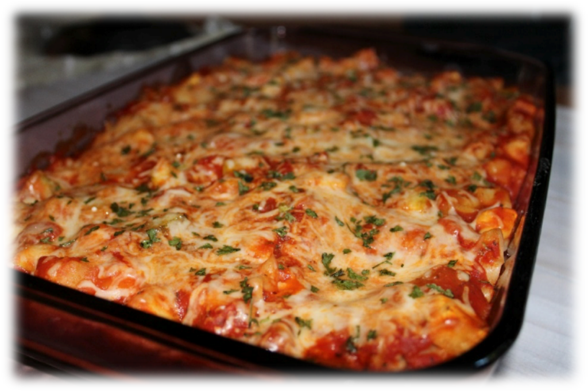

Grandma's Lasagna

This is a description of how to make lasagna
This classic lasagna recipe is made with an easy meat sauce as the base. Layer the sauce with noodles and cheese, then bake until bubbly! This is great for feeding a big family and freezes well, too.
Ingredients
- 2 teaspoons extra virgin olive oil
- 1lb ground beef
- 1/2 medium onion (diced)
- 2 cloves garlic
- 28 oz tomato sauce
- 3 oz tomato paste
- 14 oz can crushed tomatoes
- 2 tablespoons oregano
- 1/4 cup fresh parsley
- 1 tablespoon italian seasoning
- 1 pinch garlic
- 1 tablespoon red wine vinegar
- 1/4 cup sugar
- salt to taste
Steps
- Boil salted water
- Brown the ground beef
- Cook the vegetables and add the beef
- Make the sauce
- Boil and drain the lasagna noodles
- Preheat oven to 375*F
- Assemble the lasagna
- Bake for 45 minutes
- Cool for 15 minutes and serve